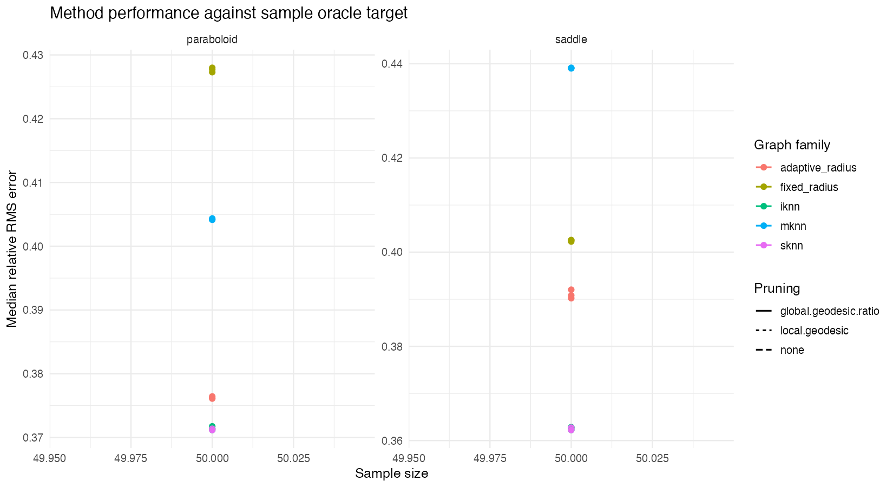
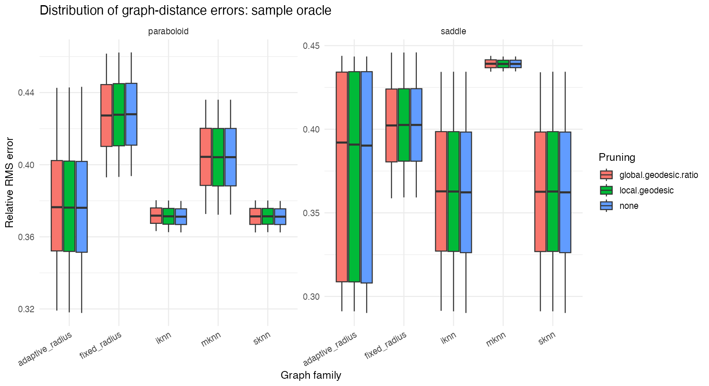
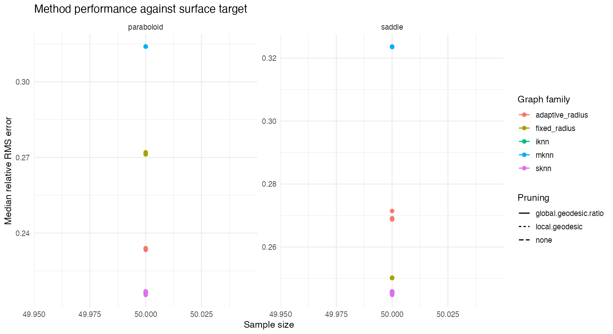
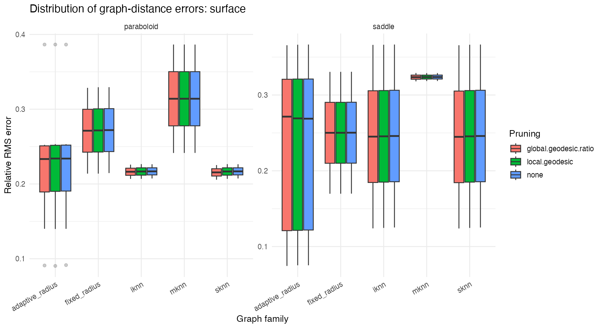
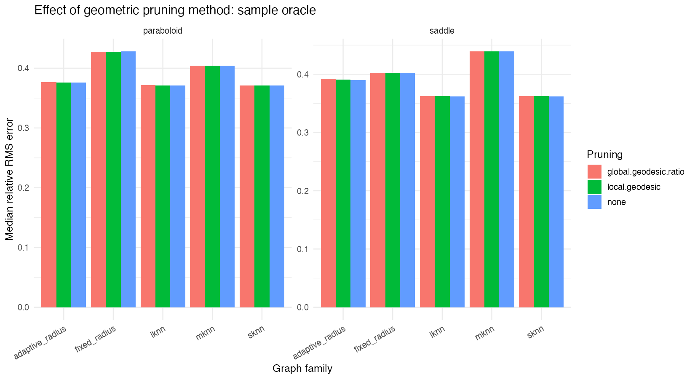
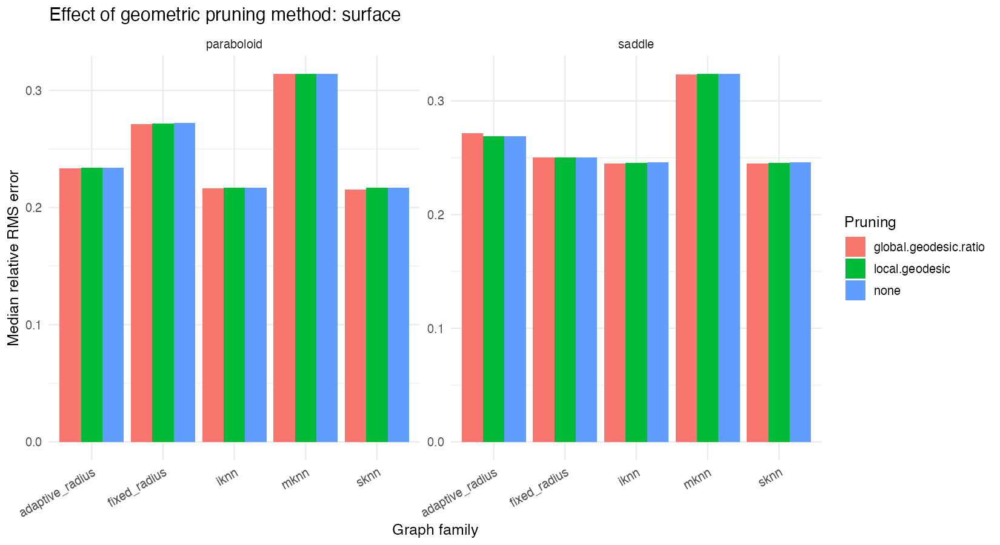
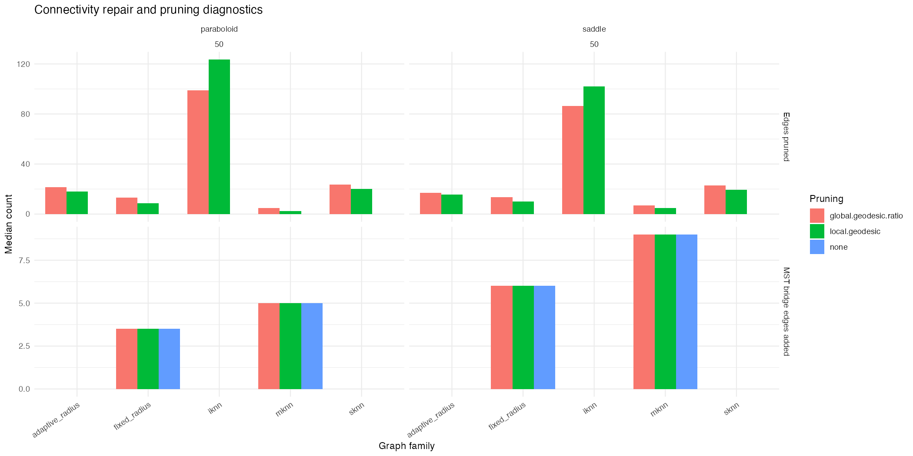

Generated: 2026-05-06 15:06:50 EDT
Mode: smoke
Grid size: 101
Workers: 1
Run directory: dev/data-geodesic-reconstruction/quadform-pruning-method-comparison/runs/smoke
This pruning-method comparison reuses the quadratic-surface data-to-graph benchmark from dev/geodesic-distance-estimation/notes/first_quadform_graph_benchmark_setup.md. It asks how none, local.geodesic, and global.geodesic.ratio pruning affect graph shortest-path fidelity to the intrinsic geodesic metric of the sampled surface. Runtime, connectivity, and edge sparsity are reported as supporting diagnostics, while relative graph-geodesic error is the primary comparison.
The benchmark asks which graph construction gives d_G closest to the reference geodesic geometry for two quadratic graph surfaces:
All graph edges in this benchmark use ambient Euclidean lengths in the embedded sample, \(\ell_{ij}=\|x_i-x_j\|_2\). The graph family and parameter controls therefore change the edge support, not the edge-length convention.
Each graph is compared with two targets. The surface target is the numerical continuum geodesic distance on the quadratic surface:
The sample-oracle target follows the estimated continuum geodesic and measures the best route available through nearby observed sample points:
These targets affect ranking and preset selection only. They do not change graph construction, graph pruning, graph repair, edge lengths, or weighted-GRIP visualization.
The main score is a scale-calibrated relative error. Given an estimated graph distance matrix \(D_G\) and a reference matrix \(D_{\mathrm{ref}}\), the scalar calibration is
The relative RMS error is
The tables also report relative absolute error quantiles, computed from \(|\alpha^*D_G(i,j)-D_{\mathrm{ref}}(i,j)|/D_{\mathrm{ref}}(i,j), and distortion quantiles, computed from \(\alpha^*D_G(i,j)/D_{\mathrm{ref}}(i,j). Lower relative error is better; distortion values closer to one are better.
Configured datasets: 2. Datasets represented in current results: 2. Metric rows: 192. Successful metric rows: 192. Error metric rows: 0.
A successful metric row is one row in metrics.csv with status='ok': graph construction completed, the selected lifecycle stage was available, graph shortest paths were computed, and the resulting distance matrix was compared with one evaluation target. An error metric row has status='error' and is retained for bookkeeping with the graph setting, target, and error message. A per-setting elapsed-time watchdog of 120 seconds was used; rows exceeding it are marked as errors.
This target asks whether the graph metric matches the best finite-sample path suggested by the true surface geodesic. Lower relative RMS error is better.


| surface | n | graph_family | k | radius_rank | k_scale | radius_rule | radius_factor | prune_method | stage | rel_rms_error | rel_abs_error_q95 | pearson_cor |
|---|---|---|---|---|---|---|---|---|---|---|---|---|
| paraboloid | 50 | adaptive_radius | NA | NA | 3 | max | 1.25 | none | raw.repaired | 0.31778 | 0.76015 | 0.68230 |
| saddle | 50 | iknn | 4 | NA | NA | NA | NA | none | raw.repaired | 0.29012 | 0.76800 | 0.72772 |
| surface | graph_family | prune_method | rel_rms_error | rel_abs_error_q95 | pearson_cor |
|---|---|---|---|---|---|
| paraboloid | sknn | none | 0.37118 | 0.86221 | 0.59083 |
| paraboloid | iknn | none | 0.37118 | 0.86221 | 0.59083 |
| paraboloid | sknn | global.geodesic.ratio | 0.37132 | 0.86760 | 0.58943 |
| paraboloid | iknn | local.geodesic | 0.37137 | 0.86465 | 0.59013 |
| paraboloid | sknn | local.geodesic | 0.37137 | 0.86465 | 0.59013 |
| paraboloid | iknn | global.geodesic.ratio | 0.37175 | 0.86578 | 0.58961 |
| paraboloid | adaptive_radius | none | 0.37610 | 0.86221 | 0.58140 |
| paraboloid | adaptive_radius | local.geodesic | 0.37621 | 0.86465 | 0.58122 |
| paraboloid | adaptive_radius | global.geodesic.ratio | 0.37644 | 0.86760 | 0.57980 |
| paraboloid | mknn | local.geodesic | 0.40415 | 0.87837 | 0.56698 |
| paraboloid | mknn | none | 0.40418 | 0.87835 | 0.56699 |
| paraboloid | mknn | global.geodesic.ratio | 0.40435 | 0.87894 | 0.56615 |
| paraboloid | fixed_radius | global.geodesic.ratio | 0.42729 | 0.91066 | 0.46802 |
| paraboloid | fixed_radius | local.geodesic | 0.42772 | 0.91114 | 0.46674 |
| paraboloid | fixed_radius | none | 0.42798 | 0.91082 | 0.46655 |
| saddle | iknn | none | 0.36224 | 0.84895 | 0.59817 |
| saddle | sknn | none | 0.36224 | 0.84895 | 0.59817 |
| saddle | sknn | global.geodesic.ratio | 0.36259 | 0.84990 | 0.59755 |
| saddle | iknn | local.geodesic | 0.36274 | 0.84982 | 0.59726 |
| saddle | sknn | local.geodesic | 0.36274 | 0.84982 | 0.59726 |
| saddle | iknn | global.geodesic.ratio | 0.36284 | 0.84926 | 0.59686 |
| saddle | adaptive_radius | none | 0.39021 | 0.90791 | 0.53142 |
| saddle | adaptive_radius | local.geodesic | 0.39081 | 0.91197 | 0.53019 |
| saddle | adaptive_radius | global.geodesic.ratio | 0.39203 | 0.91337 | 0.52852 |
| saddle | fixed_radius | global.geodesic.ratio | 0.40226 | 0.91615 | 0.52891 |
| saddle | fixed_radius | local.geodesic | 0.40255 | 0.91744 | 0.52838 |
| saddle | fixed_radius | none | 0.40256 | 0.91586 | 0.52847 |
| saddle | mknn | local.geodesic | 0.43903 | 0.95954 | 0.46905 |
| saddle | mknn | none | 0.43905 | 0.95955 | 0.46909 |
| saddle | mknn | global.geodesic.ratio | 0.43914 | 0.95953 | 0.46890 |
This target asks whether the graph metric recovers the continuum surface geodesic distance. It is the cleanest measure of data-to-graph geodesic reconstruction when the underlying surface is known.


| surface | n | graph_family | k | radius_rank | k_scale | radius_rule | radius_factor | prune_method | stage | rel_rms_error | rel_abs_error_q95 | pearson_cor |
|---|---|---|---|---|---|---|---|---|---|---|---|---|
| paraboloid | 50 | adaptive_radius | NA | NA | 4 | max | 1.25 | local.geodesic | repaired.pruned | 0.09040 | 0.19064 | 0.97815 |
| saddle | 50 | adaptive_radius | NA | NA | 4 | max | 1.25 | global.geodesic.ratio | repaired.pruned | 0.07448 | 0.17629 | 0.98464 |
| surface | graph_family | prune_method | rel_rms_error | rel_abs_error_q95 | pearson_cor |
|---|---|---|---|---|---|
| paraboloid | sknn | global.geodesic.ratio | 0.21549 | 0.51529 | 0.88287 |
| paraboloid | iknn | global.geodesic.ratio | 0.21634 | 0.51530 | 0.88221 |
| paraboloid | iknn | local.geodesic | 0.21670 | 0.51641 | 0.88169 |
| paraboloid | sknn | local.geodesic | 0.21670 | 0.51641 | 0.88169 |
| paraboloid | iknn | none | 0.21687 | 0.51759 | 0.88155 |
| paraboloid | sknn | none | 0.21687 | 0.51759 | 0.88155 |
| paraboloid | adaptive_radius | global.geodesic.ratio | 0.23336 | 0.51864 | 0.86766 |
| paraboloid | adaptive_radius | none | 0.23397 | 0.52284 | 0.86653 |
| paraboloid | adaptive_radius | local.geodesic | 0.23402 | 0.52218 | 0.86662 |
| paraboloid | fixed_radius | global.geodesic.ratio | 0.27120 | 0.65159 | 0.81810 |
| paraboloid | fixed_radius | local.geodesic | 0.27160 | 0.65307 | 0.81745 |
| paraboloid | fixed_radius | none | 0.27203 | 0.65334 | 0.81709 |
| paraboloid | mknn | global.geodesic.ratio | 0.31396 | 0.75663 | 0.76391 |
| paraboloid | mknn | local.geodesic | 0.31399 | 0.75632 | 0.76395 |
| paraboloid | mknn | none | 0.31399 | 0.75657 | 0.76399 |
| saddle | sknn | global.geodesic.ratio | 0.24478 | 0.58690 | 0.81374 |
| saddle | iknn | global.geodesic.ratio | 0.24507 | 0.58991 | 0.81333 |
| saddle | iknn | local.geodesic | 0.24547 | 0.58917 | 0.81305 |
| saddle | sknn | local.geodesic | 0.24547 | 0.58917 | 0.81305 |
| saddle | iknn | none | 0.24589 | 0.59125 | 0.81255 |
| saddle | sknn | none | 0.24589 | 0.59125 | 0.81255 |
| saddle | fixed_radius | global.geodesic.ratio | 0.25011 | 0.53028 | 0.83666 |
| saddle | fixed_radius | local.geodesic | 0.25014 | 0.53175 | 0.83669 |
| saddle | fixed_radius | none | 0.25026 | 0.53215 | 0.83657 |
| saddle | adaptive_radius | none | 0.26875 | 0.64157 | 0.80738 |
| saddle | adaptive_radius | local.geodesic | 0.26915 | 0.64385 | 0.80702 |
| saddle | adaptive_radius | global.geodesic.ratio | 0.27144 | 0.64780 | 0.80450 |
| saddle | mknn | global.geodesic.ratio | 0.32352 | 0.72832 | 0.75444 |
| saddle | mknn | local.geodesic | 0.32365 | 0.72606 | 0.75414 |
| saddle | mknn | none | 0.32370 | 0.72618 | 0.75410 |
The benchmark uses MST component repair before evaluation. The pruning comparison tests no geometric pruning, local geometric pruning, and global geodesic-ratio pruning as separate graph-construction choices. The diagnostic figure shows how many MST bridge edges and pruned edges are typical for each family.



| surface | graph_family | prune_method | n_mst_edges_added | n_pruned_edges |
|---|---|---|---|---|
| paraboloid | adaptive_radius | global.geodesic.ratio | 0.0 | 21.5 |
| saddle | adaptive_radius | global.geodesic.ratio | 0.0 | 17.0 |
| paraboloid | fixed_radius | global.geodesic.ratio | 3.5 | 13.0 |
| saddle | fixed_radius | global.geodesic.ratio | 6.0 | 13.5 |
| paraboloid | iknn | global.geodesic.ratio | 0.0 | 99.0 |
| saddle | iknn | global.geodesic.ratio | 0.0 | 86.5 |
| paraboloid | mknn | global.geodesic.ratio | 5.0 | 5.0 |
| saddle | mknn | global.geodesic.ratio | 9.0 | 7.0 |
| paraboloid | sknn | global.geodesic.ratio | 0.0 | 23.5 |
| saddle | sknn | global.geodesic.ratio | 0.0 | 23.0 |
| paraboloid | adaptive_radius | local.geodesic | 0.0 | 18.0 |
| saddle | adaptive_radius | local.geodesic | 0.0 | 15.5 |
| paraboloid | fixed_radius | local.geodesic | 3.5 | 8.5 |
| saddle | fixed_radius | local.geodesic | 6.0 | 10.0 |
| paraboloid | iknn | local.geodesic | 0.0 | 123.5 |
| saddle | iknn | local.geodesic | 0.0 | 102.0 |
| paraboloid | mknn | local.geodesic | 5.0 | 2.5 |
| saddle | mknn | local.geodesic | 9.0 | 5.0 |
| paraboloid | sknn | local.geodesic | 0.0 | 20.0 |
| saddle | sknn | local.geodesic | 0.0 | 19.5 |
| paraboloid | adaptive_radius | none | 0.0 | 0.0 |
| saddle | adaptive_radius | none | 0.0 | 0.0 |
| paraboloid | fixed_radius | none | 3.5 | 0.0 |
| saddle | fixed_radius | none | 6.0 | 0.0 |
| paraboloid | iknn | none | 0.0 | 0.0 |
| saddle | iknn | none | 0.0 | 0.0 |
| paraboloid | mknn | none | 5.0 | 0.0 |
| saddle | mknn | none | 9.0 | 0.0 |
| paraboloid | sknn | none | 0.0 | 0.0 |
| saddle | sknn | none | 0.0 | 0.0 |
The controls below expose the graph-construction layer directly. The preset control jumps to useful settings, but manual mode can select every graph setting represented in the benchmark results. The target is deliberately absent from these controls because evaluation targets rank graph settings; they are not graph-construction parameters.
The single 3D row has two panels: original data and a weighted-GRIP layout of the selected graph stage. Points are rendered as spheres. Edges are sampled when necessary to keep widgets responsive. If a selected weighted-GRIP layout is missing, the report shows the graph key needed to cache it.
On-demand layout refresh command:
Rscript dev/data-geodesic-reconstruction/quadform-first-benchmark/run_quadform_first_benchmark.R --mode=smoke --output.dir=dev/data-geodesic-reconstruction/quadform-pruning-method-comparison --report.only=true --layouts=true --layout.graph.key=<graph_key>results.rds: metrics, graph diagnostics, asset manifests, and run config.metrics.csv: one row per graph setting and target.graph_diagnostics.csv: edge/component/bridge/pruning diagnostics.dataset_manifest.csv: generated datasets.dataset_assets.csv: dataset asset files used by interactive explorers.graph_assets.csv: graph-stage adj_list/weight_list asset files.layout_assets.csv: weighted-GRIP 3D layout asset files.quadform_benchmark_manifest.rds and quadform_benchmark_manifest.json: consolidated benchmark asset manifest for downstream tools such as gflowui.run_config.json: parameter grid and run settings.report/widget_index.json: compact JSON index used by the static 3D controls.report/widgets/*.html: generated rglwidget and placeholder panels.report/widget_cache/*.rds: static-report widget cache, separate from benchmark layout assets.Command shape:
Rscript dev/data-geodesic-reconstruction/quadform-first-benchmark/run_quadform_first_benchmark.R --mode=smoke --output.dir=dev/data-geodesic-reconstruction/quadform-pruning-method-comparison --grid.size=101 --workers=1 --setting.timeout.sec=120 --layouts=true --save.graph.assets=true --save.layout.assets=true --asset.stages=benchmark